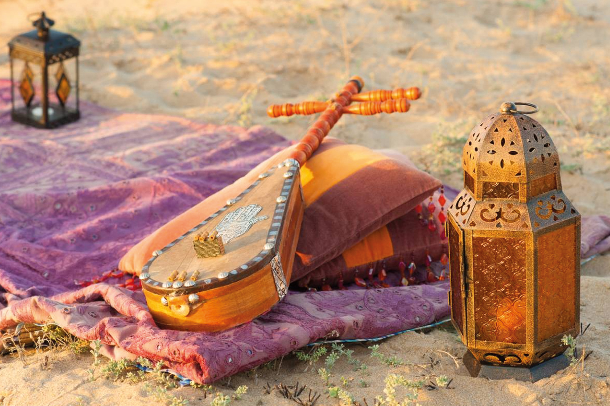

Música popular marroquí
La música popular marroquí es, en realidad, un término muy genérico que agrupa diferentes tipos de canciones ligeras, con sencilla instrumentación, a menudo cantadas en árabe dialectal (darija) y que se transmiten de padres a hijos, o incluso en la calle de manera espontánea e improvisada. Ejemplos de ello son: Aïta, muy difundida en Marrakech y su entorno, son cantos de sonido muy agudo acompañados por danzas femeninas y tamboriles Malhun, una especie de canto poético muy ligado a los artesanos, acompañado de una sencilla percusión N´fir, un género asociado a eventos religiosos populares

Música bereber, amazigh o rural
Se trata de una música de Marruecos que es inseparable de las danzas populares de las tribus rurales bereberes, especialmente del Atlas. De hecho, una importante fuente de inspiración es el entorno natural, y en otros muchos casos, Dios. Se suelen cantar en grupo con animados ritmos y ricas vestimentas, pero lo verdaderamente omnipresente es el bendir, una especie de pandereta tensada con piel de cabra. Sus canciones están compuestas en los diferentes dialectos del amazigh, la lengua utilizada por los bereberes que, de hecho, prefieren llamarse a sí mismos amazigh (singular) o imazighen (plural), que significa “hombres libres”. Por ello, a menudo se habla de subgéneros según la región que se trate y, por tanto, su dialecto: Reggada y aarfa en el Rif, en el norte de Marruecos Ahidous, en la zona de Souss, en el sur de Marruecos Chaabi, en Tamazight, en el centro de Marruecos

Música andalusí o clásica
La música andalusí, también conocida a menudo como andaluza, es todo lo contrario a la música bereber o rural: se trata de un género de música de Marruecos de gran refinamiento, que hunde sus raíces en el esplendor cultural de Al-Andalus entre los siglos IX y XV, cuando el sur de España y Marruecos tenían fuertes lazos comunes. Y más concretamente a partir del siglo XIII, cuando las conquistas cristianas en territorio andaluz provocaron el éxodo de muchos andalusíes, que recalaron en ciudades como Fez, Meknes. Tetuán o Rabat, lo que ha dado lugar a subgéneros andalusíes según la ciudad. Ese refinamiento se aprecia, por ejemplo, en la delicadeza de las letras, para las que se emplea el árabe culto. También destaca su sofisticación instrumental, que ejerció una gran influencia en la música occidental: algunos de los utilizados en este estilo son los precursores de otros que alcanzaron gran difusión en la Edad Media europea, como el oud o el rabab, precursores del laúd y del rabel, respectivamente

Música gnawa
A este género musical hacemos referencia en la página dedicada a las danzas, puesto que es un estilo principalmente bailado. Se trata de un género de música de Marruecos que combina el amazigh con el del África negra. De hecho, la importancia de la percusión y el colorido de los ropajes utilizados nos remite a tipos subsaharianos, que quizás fueron introducidos en el país por parte de los esclavos traídos de países como Sudán. Entre los instrumentos más destacados están las qraqab o castañuelas metálicas, así como el gimbri, una especie de bajo de tres cuerdas. El Festival de Música Gnawa que cada año se organiza en verano en Essaouira es una de las mejores ocasiones para descubrir este género. Pero también se puede encontrar en cualquier momento del año en localidades como Khamlia, llamado el pueblo de los negros, por donde pasan muchos de nuestros circuitos rumbo al desierto del Sahara.